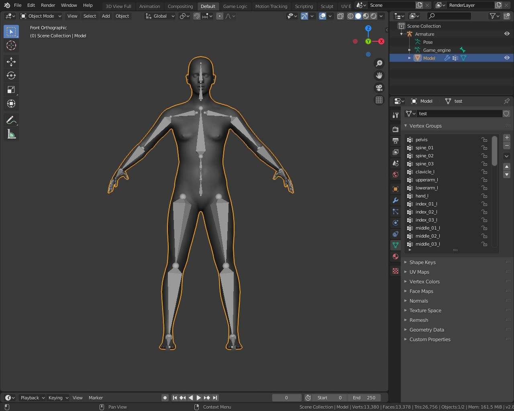
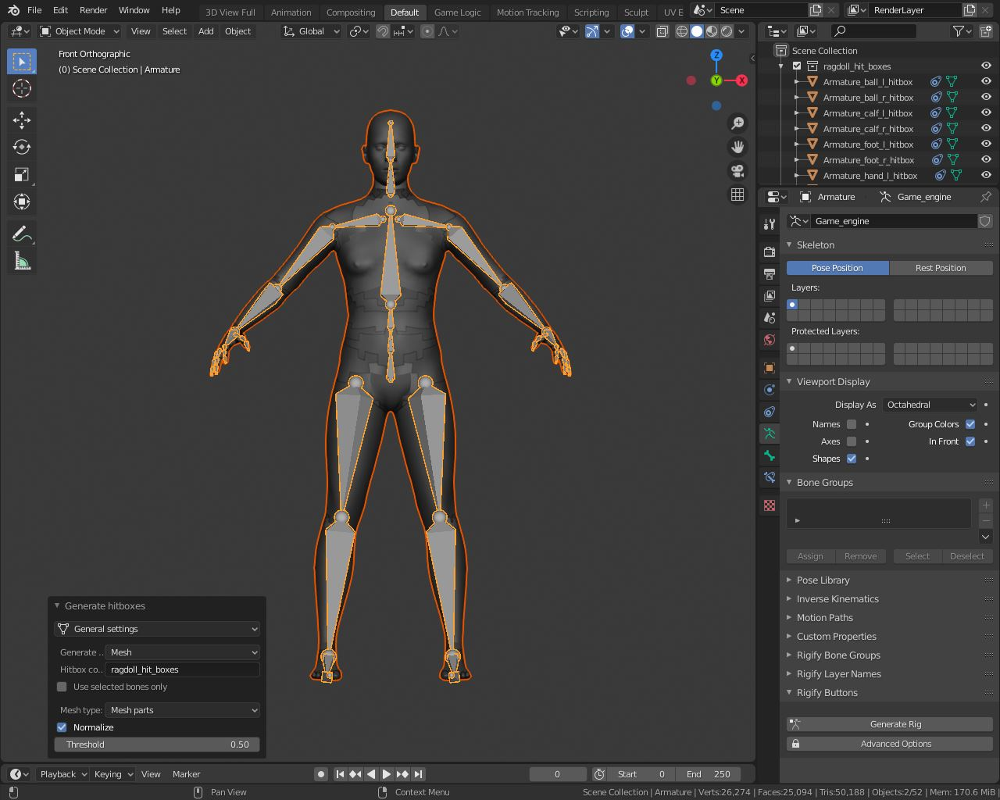
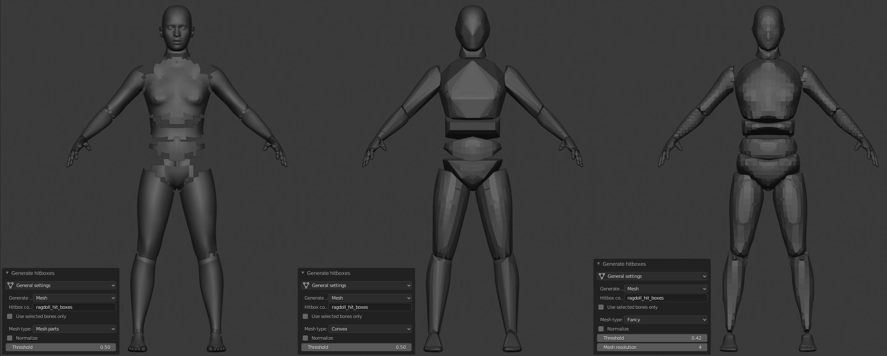
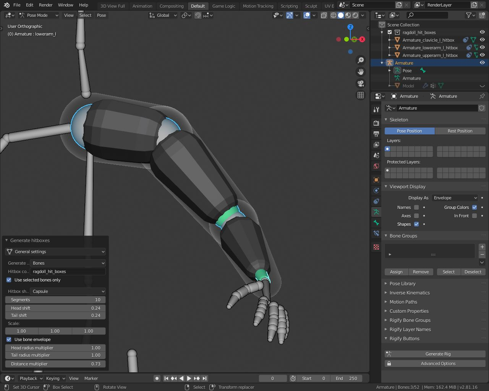
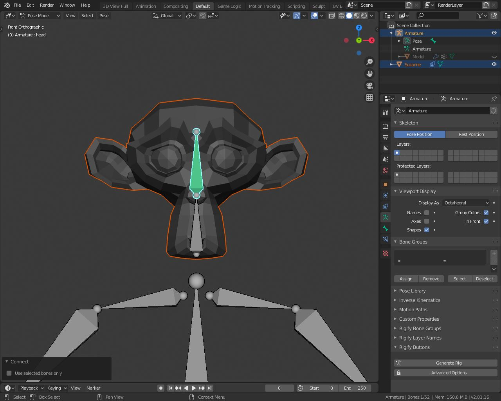
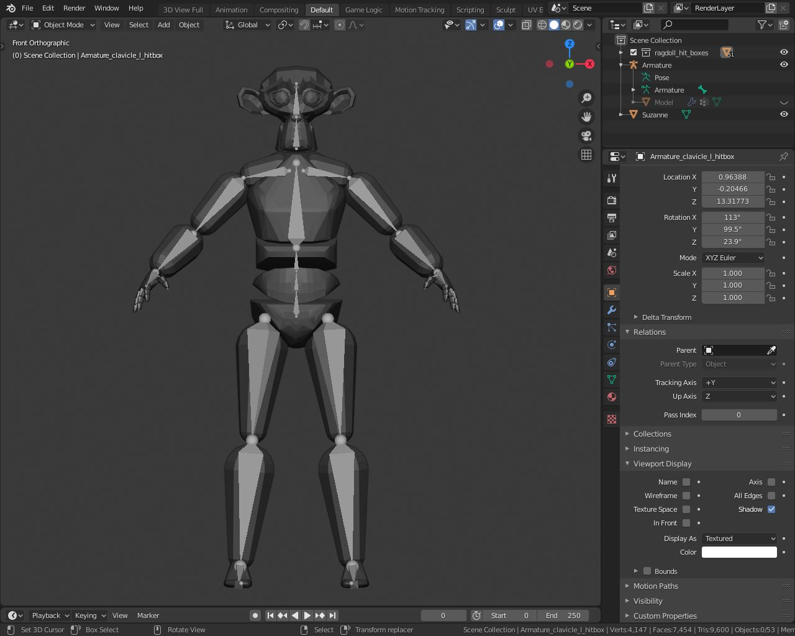
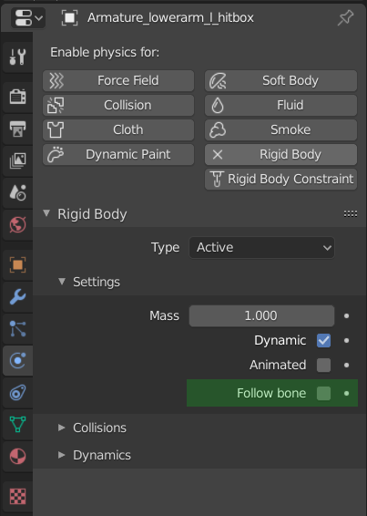
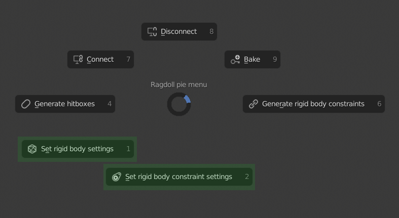
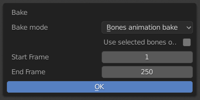
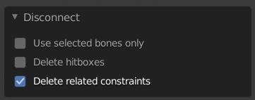

Welcome to Ragdoll Tools documentation!¶
Ragdoll tools is an addon for generating ragdolls in Blender.
All its functions are collected in one pie menu

It can be found in the search popup

Hitboxes¶
To start with, take some model which is attached to armature

Select model and its armature and run Generate hitboxes operator from the pie menu
The result should look like this

You can adjust shape of the hitboxes via the operator settings

If you wish,you can also generate hitboxes from the bones using same operator.

Also you can take any mesh object and connect it to any bone as hitbox.

To do this,select object, then go to the Pose Mode ,select bone ,and run Connect operator from the pie menu.
So,no matter which method you choose,now you have a bunch of hitboxes connected to the bones.

What mean that connection?¶
Every bone follows its hitbox if they are connected…or hitbox follows the bone.It depends on the Follow bone property of each hitbox.
This property can be found in the physics tab.

You can change it for all selected objects at once if you hold the Alt during change (this works for almost any property in Blender)
To animate some property on selected objects use this addon
Constraints¶
If you run the simulation right now,everything just falls apart.
To make a ragdoll you need to connect all these hitboxes with constraints.
To do this ,select all hitboxes and call Generate rigid body constraints operator from the pie menu

For good result you may need to adjust physical properties of the hitboxes and constraints.
These operators can be helpful to set that properties for all selected objects at once.

To see constraint limits in viewport ,install this addon
When you’re done with constraints,it’s time to run simulation
Bake¶
Once you’re satisfied with the animation of the ragdoll,it’s time to bake it to the bones.
You can do it using Bake operator.

It also can be used to copy animation from bones to hitboxes.Just make hitboxes follow bones and chose Hitboxes animation bake in operator settings.
Disconnect¶
If you no longer need hitboxes, select them or their bones and run Disconnect operator

Videos¶
Check out these videos to see it all in action.
They were made in Blender 2.79 but the workflow is the same for Blender 2.8x